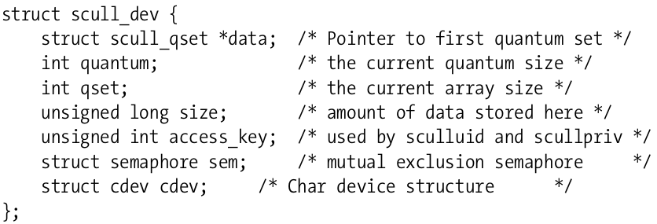
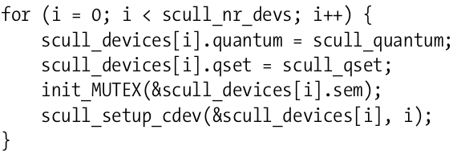
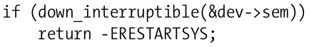
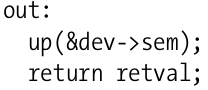
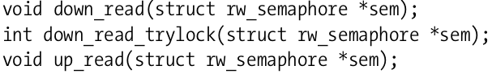
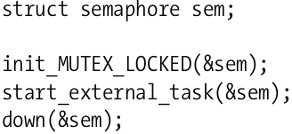
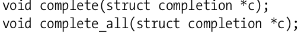

并发与竟态
之前的系列文章里，都没有关注过并发，比如系统里同时做多件事该发生什么．并发相关的操作很容易形成bug但却不易排查．
在早期的内核里，比较少有并发的情况产生．那时SMP系统还不被内核支持，唯一可能引起并发情况的就是中断服务．这种情况尽管简单，却没有利用起多处理器的性能．对于现代硬件以及应用的情况，Linux已经进化成可以做到许多事情同时进行．这种改变可以带来更大的性能提升以及灵活性．当然，这也加剧了内核编程的复杂性．设备驱动程序员必须一开始就考虑到并发的因素，并且对内核提供的并发管理功能也要能理解到位．
来看下面这段代码，是有问题的：
if (!dptr->data[s_pos]) { dptr->data[s_pos] = kmalloc(quantum, GFP_KERNEL); if (!dptr->data[s_pos]) goto out; }
假设在某个时刻，有两个进程同时独立的尝试写scull设备里相同的偏移处，那么这两个进程会同时到达if的条件测试，如果这个指针是空，每个进程都会分配内存，那么每个进程都会在dptr->data[s_pos]里分配指针．因为两个都在相同的位置，当然只有一个是有效的．
可以想见，第二个赋值的指针会是有效的．如果A先赋值．那么它赋的值就会被B覆盖．
这种情况展示了一个竞态．竞态意味着对于共享数据不受控制的访问．竞态问题会引起意想不到的后果．在这里讨论的竞态问题，会引起内存泄漏．但是竞态还可能会引起系统crash，污染数据或者是其它安全问题．
在现代的Linux系统上，并发的来源有很多，这意味着很多机会可以产生竞态．许多用户态程序在运行，它们可能会以各种组合访问内核代码．SMP系统可以在不同的核上同时执行用户程序．内核也是可以抢占的，驱动代码可以在任何时候不再拥有处理器．异步事件的设备中断也可以造成代码的并发执行．而内核还会提供各种各样的延迟执行机制，比如workqueue，tasklets以及timers．而现在的热插拔世界里，当正在使用设备时，设备也可能会消失．
竞态主要来自共享资源．当多个线程有必要和共同的数据交互时，就会有竞态问题．所以第一个经验是，尽量避免可能的资源共享．最明显的例子就是应当尽量避免使用全局变量．
然而，共享却是十分有必要的．硬件资源本身就是共享的，而软件资源通常也是提供给多个线程．全局变量也不是变量共享的唯一形式，只要代码以指针形式传递到函数，就有可能形成一个共享的情形．
硬件或软件被超过一个线程共享时，就有可能，一个线程在观察这个资源时遇到不一致的情况，所以必须有意识的管理起来．
另外一个重要的规则是，当内核代码创建了一个共享的对象时，这个对象应当持续存在并且保证功能正确直到没有外部依赖存在．这其实对共享对象提出了两点要求，一是直到共享对象完全准备好能正确工作时才能提供给内核使用，二是对共享对象的引用计数必须追踪起来．
信号量和互斥体是内核提供用来同步的两个常用操作．在介绍它们之前，先得引入临界区的概念：在任意给定的时间都只能被一个线程执行的代码．
不是所有的关键区都是一样的，所以对于不同的需求，内核提供了不同的操作原语．
进程睡眠在内核里是有其特定定义的，当Linux进程到达一个点，此时不能再进一步运行，就可以睡眠，并让渡处理器给其它进程，直到未来条件满足又可以执行．比如在等待I/O完成时，进程可以睡眠，后面会看到，在有些情形下进程是不能睡眠的．而使用某些锁机制却可能引起进程睡眠．
信号量是一种常见的锁机制，本质上，信号量就是一个整数连带一些操作的函数，通常叫做P或V．一个希望进入临界区的进程，可以在相关的信号量上调用P操作，如果信号量的值大于0，那么该值递减1，并允许此次访问．如果是0的话，进程就得等待其它进程释放该值，通过调用V操作．该操作会增加信号量的值，并且在必要的时候唤醒等待的进程．
当信号量的值被初始化为1时，这样的信号量在给定的时间就只能有一个进程访问了，这就是互斥体．
为了使用信号量，内核代码必须包含<asm/semaphore.h>，相关的结构体就叫semaphore. 可以使用sema_init函数来初始化：
void sema_init(struct semaphore *sem, int val);
其中val就是初始化给sem的初始值．
通常，信号量使用在互斥模式下，为了简化这种情况的使用，内核提供了一些辅助函数和宏：
DECLARE_MUTEX(name); DECLARE_MUTEX_LOCKED(name);
这时，一个名为name的信号量被初始化为1(DECLARE_MUTEX)或者是初始化为0(DECLARE_MUTEX_LOCKED)．后一种情况，mutex自一个锁住状态开始，在线程能访问前必须显式的解锁．
在Linux的世界里，P函数被叫做down操作．down是指该函数或递减信号量的值，并且有可能使得调用者进入睡眠状态，直到信号量可以提供．对于down是有几个版本可以提供的：
void down(struct semaphore *sem); int down_interruptible(struct semaphore *sem); int down_trylock(struct semaphore *sem);
down会递减信号量的值．down_interruptible做类似的事情，但是操作是可以中断的，几乎所有情形下都是使用这个版本的，这个版本允许正在一个信号量上等待的进程被中止等待．使用down_interruptible需要一点额外的小心，如果操作被中断，函数就会返回一个非零的值，这是调用者就并未持有信号量，需要检查它的返回值，并且根据不同的情况做不同的处理．
而最后一个down_trylock不会睡眠，如果信号量在调用时不可提供的话，它会立即以一个非0的值返回．
一旦线程成功的调用了down，就是说持有了信号量，线程现在就可以访问由信号量保护起来的临界区．当操作完成后，信号量必须被返回．所谓的V操作，就是函数up：
void up(struct semaphore *sem);
可以看出，任何持有信号量的线程都必须通过调用up释放一次(且仅一次)．如果在持有信号量的时候遭遇了错误，那么在返回给调用者前必须先释放信号量．未释放信号量是一个容易出现的错误，进程可能在毫无关联的地方挂掉，并且这样的问题很难复现．
信号量机制提供了一种工具，它可以保证在访问scull_dev结构体时避免竞态问题．但是如何正确使用这个工具却是由我们自己来决定的．使用锁原语的关键是精确的定义出哪个资源需要被保护，以及每次对这些资源的访问都需要被正确的锁住．在例子驱动里，这个结构体就是scull_dev：

Figure 1: scull_dev结构体
在底部的成员sem就是我们的信号量了．对于每个虚拟scull设备，都有一个不同的信号量，当然，只使用一个全局的信号量也是正确的，然而多个scull设备没有共享的资源，所以没有理由让一个进程使用某个个scull设备时而另一个需要使用不同scull设备的进程需要等待．对于每个设备都使用不同的信号量，这样操作多个设备时就可以并行，提高效率．
在使用信号量前必须初始化．scull在加载时执行如下的初始化代码：

Figure 2: 初始化信号量
在scull设备准备好向系统其它部分使用时信号量必须被初始化好，因此init_MUTEX在scull_setup_cdev之前被调用．如果调换顺序，可能会造成竞态．
下面在涉及到scull_dev结构体时，没有持有信号量时是不能访问scull_dev结构体的．比如scull_write函数就以下面这样的代码开始：

Figure 3: 获得信号量
注意检查down_interruptible的返回值，如果是返回非0，操作就会被中断．通常在这种情况下返回-ERESTARTSYS．较上层的内核代码看到这个返回值时要么重启这个调用或者将错误返回给用户．如果返回-ERESTARTSYS，就必须撤销所有用户可见的改变，这样再次尝试系统调用时才是正确的状态．如果不能撤销所有的改变，就应该返回-EINTR．
不论scull_write能否成功执行其它任务，都必须释放信号量．如果一切正常，最后将会执行如下几行代码：

Figure 4: 释放信号量
这段代码释放信号量并且返回状态．在scull_write函数里，可能有几处会导致scull_write函数失败．包括内存分配失败，尝试从用户空间拷贝数据的失败．在这些情况下，代码会执行goto out，确保正确的清理工作有被执行．
读者/写者信号量
信号量对所有的调用者都执行互斥操作，不论这些线程是做什么类型的工作．然而许多任务都可以划分出两个完全不同类型的工作，一是只读保护的数据结构，二是必须作出改变的．通常允许多个并发的读者是可能的，因为没有人尝试改变．因为这样做可以优化性能，只读的任务可以并发的进行从而不用等待其它读者退出关键区．
对这种情况，Linux内核提供一种特别的信号量叫做rwsem．rwsem在驱动里用的较少．
使用rwsem的代码必须包含<linux/rwsem.h>，相关的结构体是struct rw_semaphore．rwsem必须调用如下的函数初始化：
void init_rwsem(struct rw_semaphore *sem);
下面的接口用于只读的代码访问：

Figure 5: rw_semaphore只读
调用down_read将会允许对保护资源进行只读的访问，可以和其它读者并发执行．注意对down_read的调用可能将进程置于不可中断睡眠．down_read_trylock则在读访问不可提供时不会等待，如果访问允许的话返回非0，不允许返回0．通过down_read获得的rwsem，最后必须通过up_read来释放．
而对于写者的接口也是相似的．
rwsem允许一个写者和无限个读者去持有信号量．写者的权限更高，只要一直有写者尝试进入临界区，那么只有当所有写者完成工作时才允许读者持有．这可能会导致饥饿，就是读者被拒绝访问很长一段时间，也就是这时有许多的写者在竞争对信号量的使用．基于此，rwsem最好适用于写很少发生，并且写时时间很短的场景．
完成量
在内核里一种常见的编程模式是，在当前进程之外发起某些活动，然后等待活动的完成．这些活动可以是创建新的内核线程或者用户空间进程，或者发送一个请求到已存在的进程，再或者是某些硬件操作．在这种情况下，很容易想到使用信号量来同步两个任务，像下面这样的代码：

这样外部的任务完成时可以调用up(&sem)了．
实践证明，在这种场景下，信号量不是最好的选择．正常情况下，尝试获得信号量的代码多数都应该是发现信号量是可用的．如果有对信号量的竞争，性能就会有损失那么锁方案需要重新评估．所以信号量主要是用在大多数情况是可用的情况下．在上面介绍的沟通任务的完成情况下，调用down的线程通常会等待，因此性能会降低．信号量在某些情况下也可能会导致竞态，这时是自动变量，在有进程调用up时，这个信号量可能会消失．
这些问题促使了完成量的引入．完成量是一种轻量级的方式：可以使得一个线程去告诉另一个线程任务已经完成．为了使用完成量，代码里应该包括<linux/completion.h>．完成量可以通过如下代码创建：
DECLARE_COMPLETION(my_completion);
或者是动态的创建：
struct completion my_completion; /* ... */ init_completion(&my_completion);
等待完成就是简单的C调用：
void wait_for_completion(struct completion *c);
另一方面，实际的完成事件通过以下函数发出：
